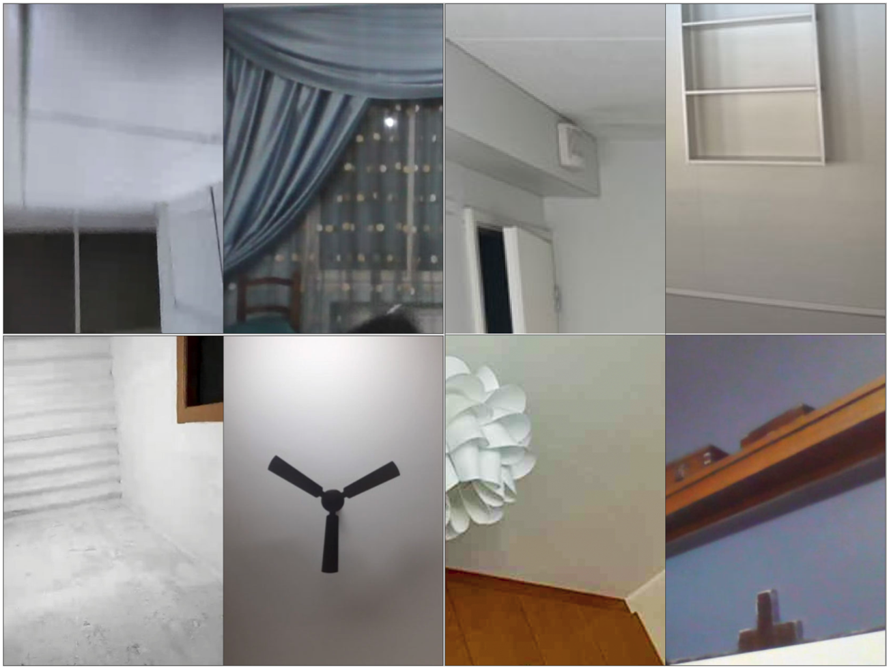
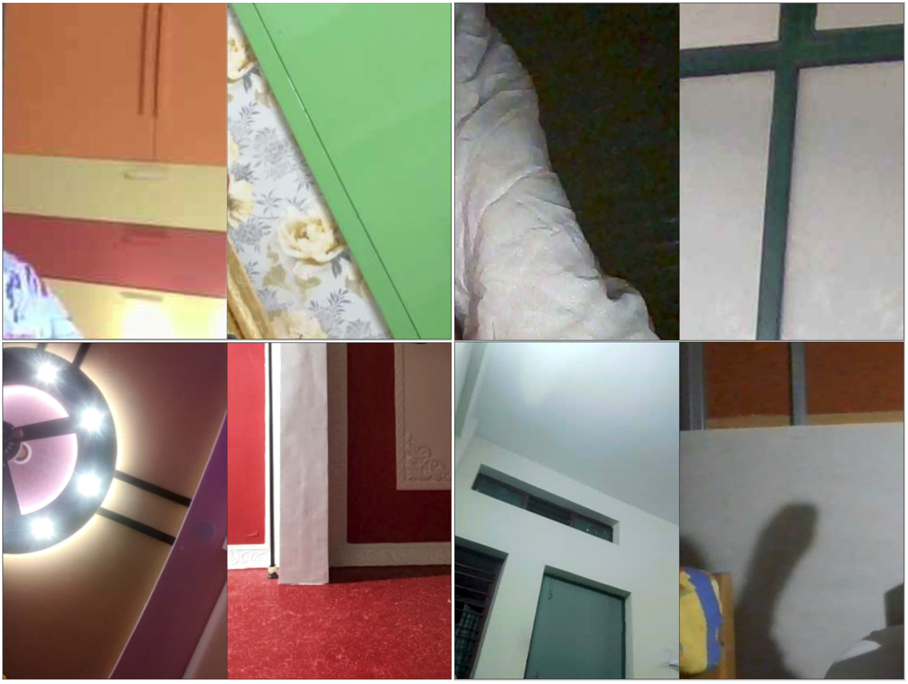

CONVERSATION WITH A STRANGER'S WALL
2022-
Omegle was a free, web based online chat service, that allowed users to socialise with others. The service randomly paired users in one-on-one chat sessions, where they could chat anonymously through texting or video.
My interest in spaces has led me to this ongoing project. I capture and collect the ceilings, corners, fans, lamps or elbows that first appear on the screen in every randomly generated video chat.

